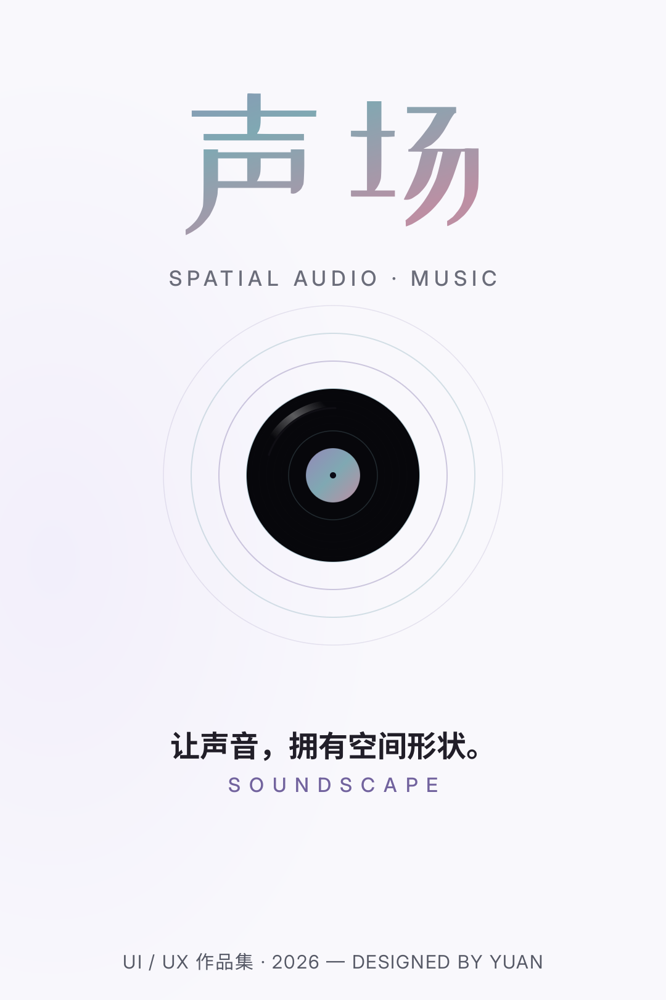
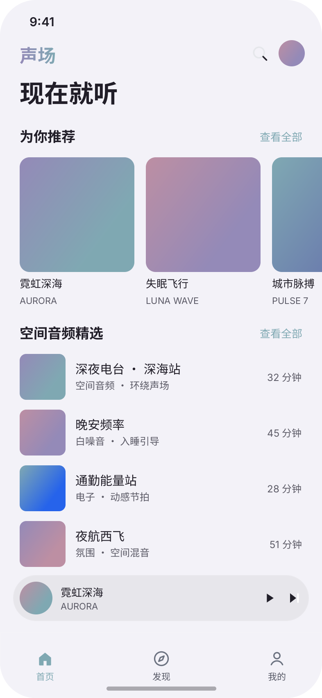
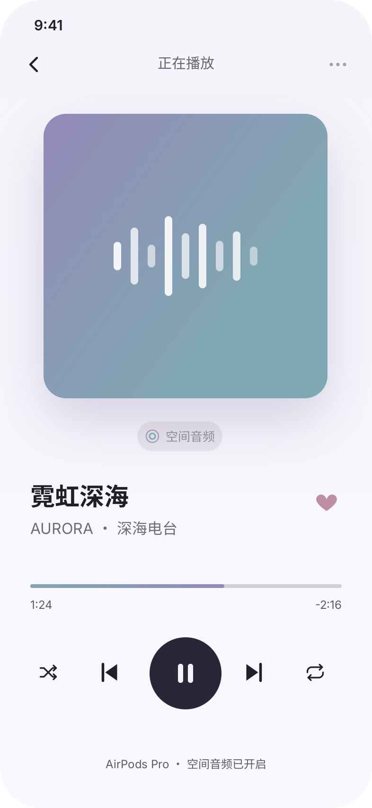
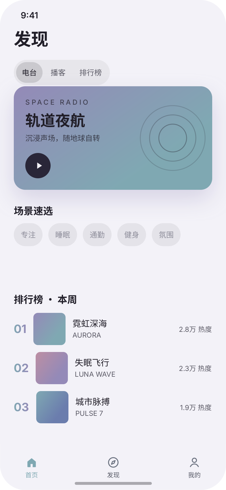
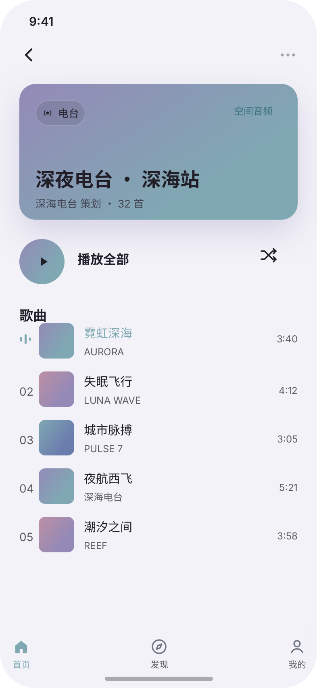
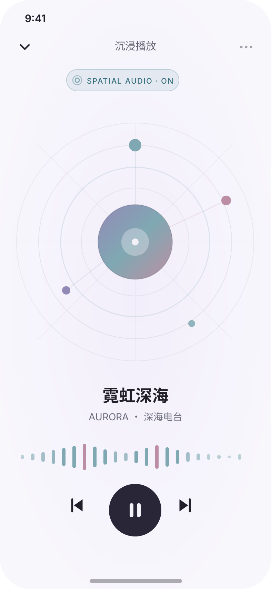
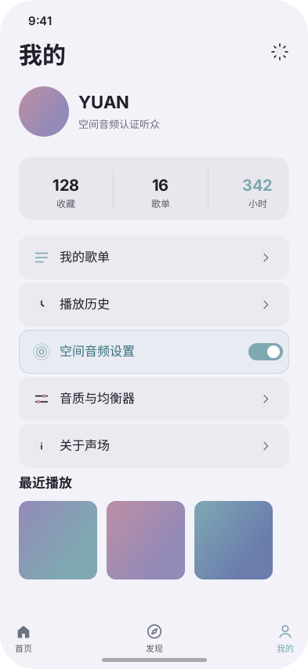
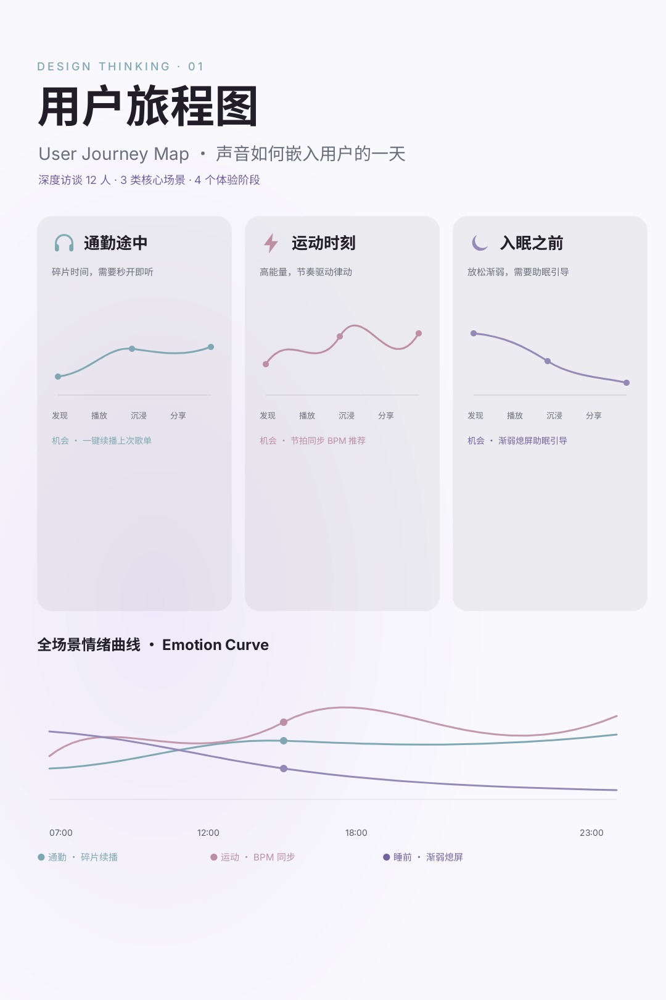
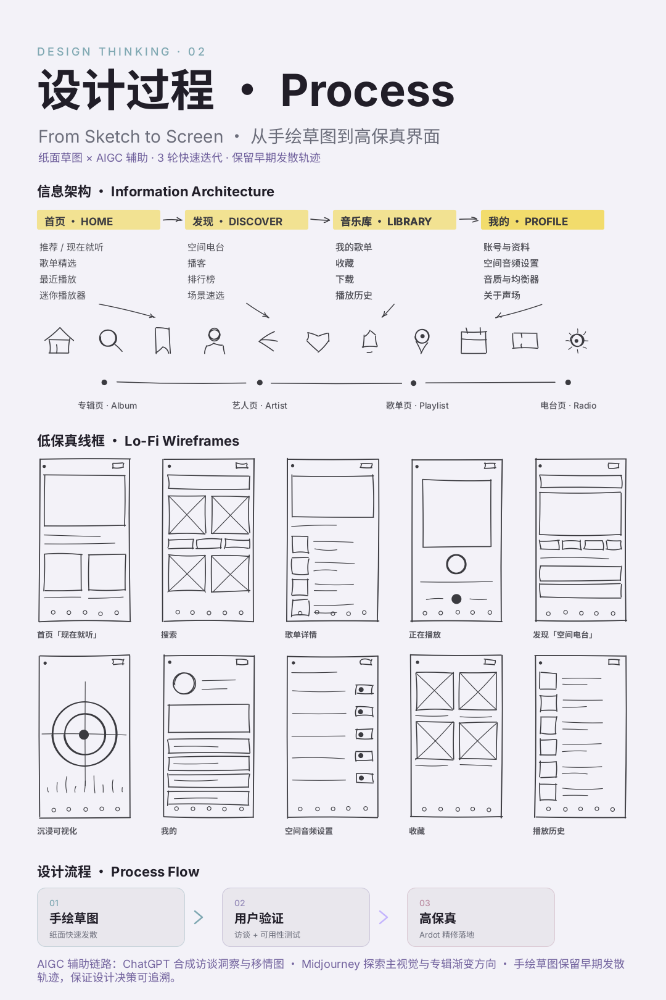

「声场 Soundscape」是一个为空间音频而生的音乐播放 App。我把抽象的声音方位与临场感，翻译成可看、可懂、可操作的界面。

为什么做、做成什么样、我负责什么。
空间音频正在成为移动端听歌的新常态，但主流音乐 App 仍以二维歌单组织内容，用户难以感知声音的空间位置与临场感。
让「空间感」成为可看见、可操作的界面语言；降低空间音频的发现与理解成本；建立一套可复用的低饱和渐变色彩系统。
用户研究、信息架构、交互流程、视觉系统、高保真界面与原型，并产出用户旅程图与手绘过程稿。
研究洞察 → 手绘草图 → 低保真线框 → 用户验证 → 高保真界面 → 设计系统沉淀。
把声音的方位与距离画出来，让抽象的音频可被感知。
统一降饱和，配合浅底，长时间聆听也不刺眼。
按通勤 / 运动 / 睡前等真实情境组织内容，降低决策成本。
6 张高保真界面，覆盖播放、浏览、发现与沉浸可视化。






拆解通勤、运动、睡前三大真实场景，定位情绪起伏与机会点。

三张场景卡 + 全场景情绪曲线汇总
从信息架构探索到 10 张手绘低保真线框，保留完整的发散与收敛轨迹。

手绘 IA 探索 + 图标组 + 10 张低保真手机线框
四个让「声场」真正成立的决策点。
把声音方位画成同心波场与波形条，让抽象的 spatial audio 变成可看、可懂的界面语言。
紫 / 青 / 粉三色统一降饱和，配合 #F3F2F8 浅底，既有沉浸感又不刺眼，长时间聆听更舒适。
按通勤 / 运动 / 睡前等真实情境组织内容，减少决策成本，让推荐贴合当下状态。
同一套信息架构与组件，同时验证深色沉浸与浅色清爽两种呈现，保证视觉一致性。